This release includes the following improvements, new algorithms, translations and bugfixes:
Signing JAR files has been part of KSE's functionality for a long time. Now it is also possible to verify the signatures of signed JAR files.
This can be done via the "Verify JAR File Signature" menu item in the Tools menu.
After selecting a signed JAR file, KSE will display the details of the signatures found in the JAR file and indicate whether the signatures are valid or not.
The verification details are very similar to the output of the "jarsigner -verify" command (see for example jarsigner - example of verifying a signed jar file).
The details include:
The meaning of the verification flags are probably already known from jarsigner but here is a short explanation (the same explanation is displayed in the tooltip when you hover over the flags column header):
s = signature was verified
m = entry is listed in manifest
k = at least one certificate was found in keystore
This feature was contributed by jonwltn.
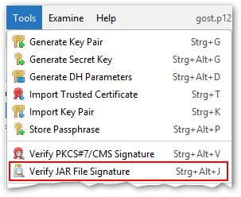
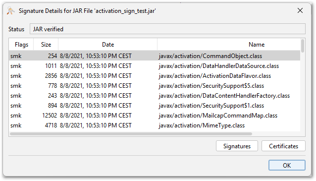
KSE now supports the ML-DSA and SLH-DSA signature and key algorithms. These algorithms are part of the NIST standardization process for post-quantum cryptography (PQC).
Supported are the following operations with these algorithms:
In addition to that KSE also supports generating ML-KEM keypairs, but only in certificates that are signed with another key pair (as ML-KEM is a key encapsulation mechanism and not a signature algorithm). This is achieved by using the "Sign New Key Pair" feature in the context menu of a signature key and selecting ML-KEM as the key algorithm for the new key pair. The result is basically the same as using the keytool commands described in JEP 496.
This feature was contributed by AnassBousseaden (ML-DSA) and jonwltn (SLH-DSA and ML-KEM).
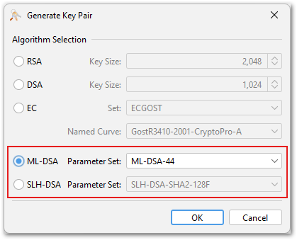
KSE now supports the SM2 and ECGOST signature and key algorithms. These algorithms are widely used in China (SM2) and Russia (ECGOST). They are elliptic curve algorithms and can therefore be used by selecting the EC key type with the respective curve set in the key generation dialog.
SM2 is currently only supported for keystore files of type BKS, BCFKS and UBER.
Supported are the following operations with these algorithms:
Contributed by jonwltn.
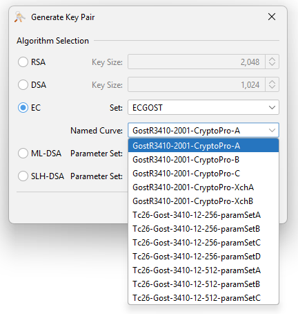
In previous releases the user had to select the format of the key in the key pair import dialog, e.g. PKCS#8, PKCS#12, OpenSSL etc. Sometimes it was not clear which format to select. Or in some cases the files had a wrong file extension that did not match the actual format. This lead to confusion and import errors.
Now the key pair import dialog automatically detects the format of the key to import.
In addition to that it is now possible to import key pairs without a matching certificate. In Java keystores key pairs are always associated with a certificate chain. But if the key pair has no certificate yet, KSE now creates a self-signed certificate automatically during the import process.
If you leave the certificate fields empty and click the "Import" button, KSE will ask whether a self-signed certificate should be created.
Offering the generation of a self-signed certificate if none was provided was a contribution by Jairo Graterón.
The rework of the import dialog to use automatic format detection was contributed by jonwltn.
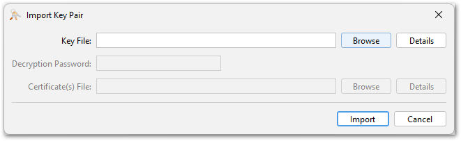
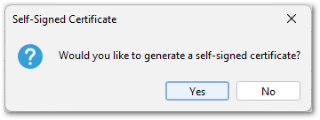
With keytool you can store arbitrary passwords/passphrases in a keystore using the "-importpass" command. KSE now supports this feature as well.
The passphase entries can be created via the "Store Passphrase" menu item in the "Tools" menu. They are stored as secret key entries in the keystore using a "PBE*" algorithm.
The stored passphrase can be viewed and modified like normal secret key entries.
This feature was contributed by jonwltn.
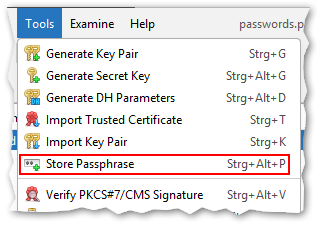
The certificate details view now includes two additional fields:
This feature was contributed by Jairo Graterón.
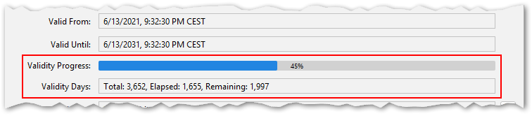
The values of the following certificate extensions are now displayed in the certificate details view:
Parsing of the SCTs extension was contributed by Jairo Graterón and the other three extensions by The-Lum.
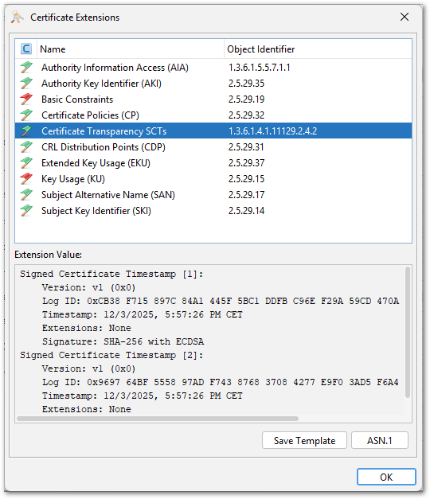
In previous releases the columns displayed in the main table could be selected in the preferences dialog. Now there is a second, quicker way to select the columns via a context menu in the table header
Right-clicking on the table header opens the context menu. It shows a list of all available columns to select or deselect them.
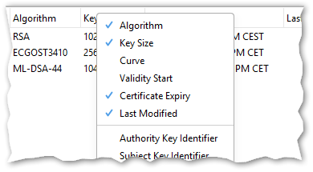
The visible content of the KSE main table can now be exported as a CSV (comma-separated values) file.
This can be done via the "Export as CSV" menu item in the "Tools" menu. The exported CSV file includes all visible columns - to add or remove columns, use the column selection feature.
The separator character (either comma or semicolon) is automatically selected based on the system locale.
This feature was contributed by jonwltn.
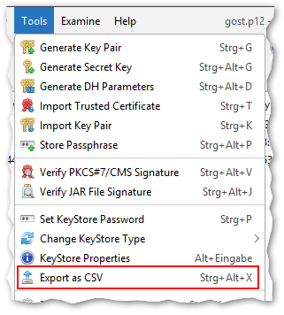
The context menu for multi-selections in the main table has received the following improvements:
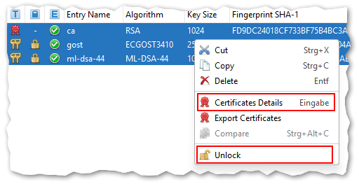
Additional keyboard shortcuts have been added to the menus (both new and existing):
Contributed by The-Lum.
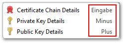
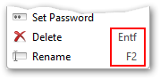
Action Buttons ("Import", "Export", "PEM", "ASN.1") in Dialogs:
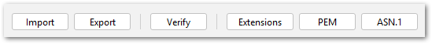
The following user choices are now remembered over restarts of KSE:
Contributed by jonwltn.
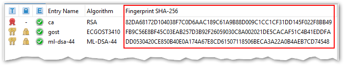
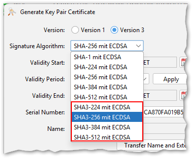
This release includes the following new features, enhancements, translations and bugfixes:
The KeyStore password manager is a new feature that allows to store and manage passwords for keystore files. In combination with the new password generator it is now very easy to create and open keystores without having to type long passwords.
The password manager can be used by selecting the checkbox "Store this keystore's passwords in KSE's password manager" when creating a new keystore or opening an existing one. This decision is on a per-keystore basis and it includes all passwords of this keystore, but it can be changed later.
On the first use of the password manager, a global password for the password manager must be set. This password is used to encrypt the passwords stored in the password manager.
In the preferences dialog a new section has been added for the configuration of both the password manager and the password generator.
In the next releases, more configuration options for the password manager will be added.
Details about the password manager can be found in the documentation.
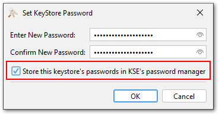
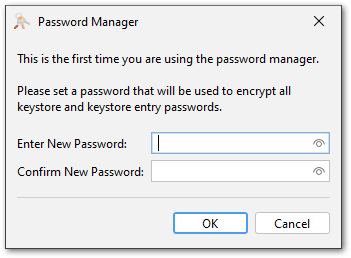
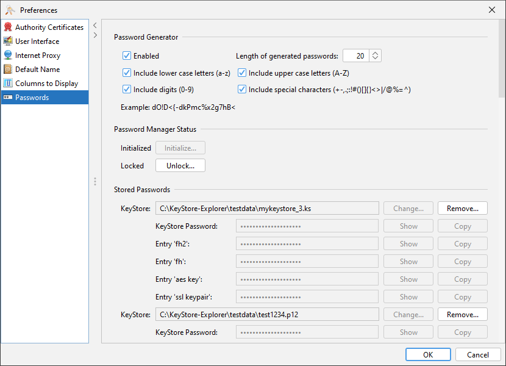
The JSON Web Key (JWK) format is a JSON representation of cryptographic keys. It is defined in RFC 7517 and is used in many modern web applications.
KSE can now export public and private keys in JWK format. Supported are currently RSA and EC keys (no Ed25519).
This feature was contributed by tenpertur.
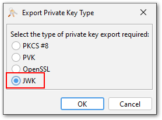
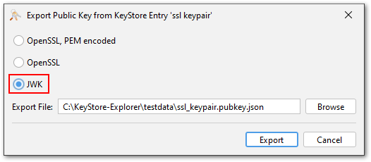
In one of the last releases, KSE introduced a viewer for JWT (JSON Web Token) files, which can be used via the "Examine File" or "Examine Clipboard" menu items.
This JWT viewer can now also verify the signatures of JWT files. This is done by pasting a public key in encoded as PEM or Base64 DER into the public key field of the JWT viewer and then clicking the verify button. Supported are RSA and EC keys and the corresponding signature algorithms ("RS...", "ES..." and "PS...").
This feature was contributed by Jairo Graterón.
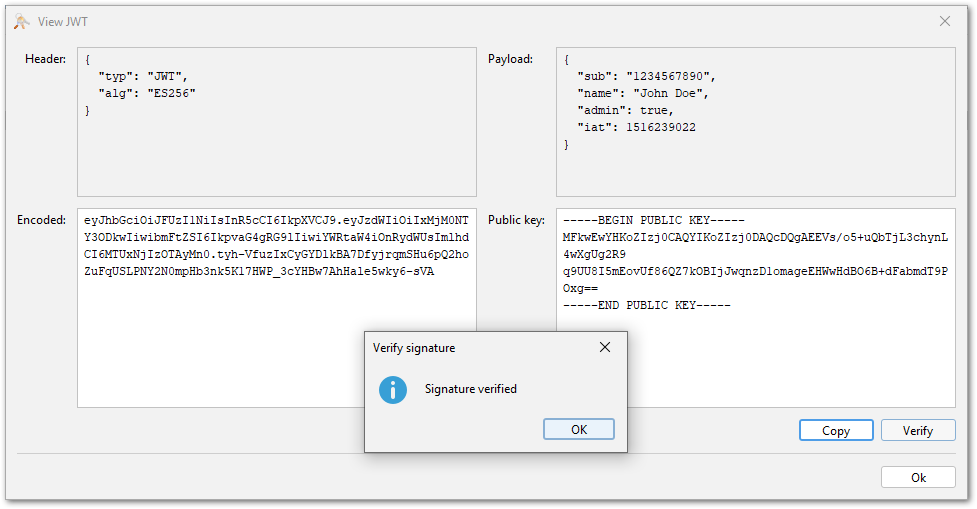
KSE now supports signing and verifying arbitrary files using PKCS#7/CMS. This is a widely used standard for signing files.
This feature can be found in the context menu of key pair entries:
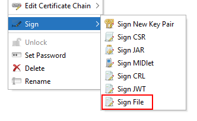
The PKCS#7 file can be either stored separately as a so-called "detached signature" or the signed file can be embedded in the PKCS#7 file. The latter is called "enveloped signature". In both cases the output format can be either PEM or binary DER.
A TSA (timestamp authority) can be used to timestamp the signature. KSE includes a list of well-known TSAs that can be used for this purpose. If you want to use another TSA, then its URL can be entered manually instead.
And finally the signature can be added as a "counter signature" to an existing PKCS#7 file. A counter signature does not sign data but another signature.
This feature was contributed by jonwltn.
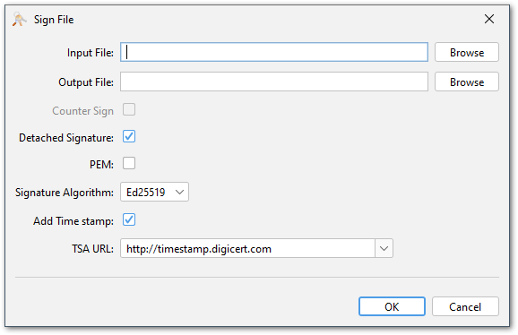
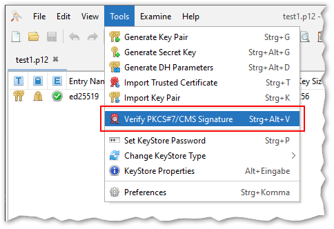
This is not really a new feature, but so far there have been several restrictions that prevented the native file chooser to be available in KSE for a majority of the users. First of all the Java runtime had to include the JavaFX library, which is not the case anymore for most modern Java distributions. Also, on macOS the native file chooser had to be disabled because of an incompatibility between tools like Karabiner or Cinch and the JavaFX library. This seems to be fixed now.
Starting with this release KSE includes the JavaFX library and the native file chooser can be enabled in the preferences.
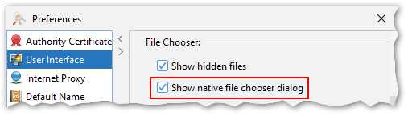
PKCS#12 is a very flexible format. It can contain an arbitrary number of key pairs, certificates and even CRLs. A wide range of encryption algorithms can be used to protect the contents of a PKCS#12 file.
With this flexibility comes complexity. There have always been compatibility issues with PKCS#12 files created by different tools. This situation has not exactly improved when Java 8 introduced support for so-called "trusted certificates" (i.e. standalone certificates that are not associated with a key in the same file) in PKCS#12 files by marking them with a custom bag attribute with OID "2.16.840.1.113894.746875.1.1".
As a result any certificate in a PKCS#12 file that is not part of the chain belonging to a key in the same file is simply ignored by the Java runtime. This has caused a lot of confusion among users.
In the meantime OpenSSL v3.2 has added a new flag "-jdktrust anyExtendedKeyUsage" to its pkcs12 command that allows to create PKCS#12 files with standalone certificates that are compatible with Java:
$ openssl pkcs12 \
-export \
-out test.p12 \
-in test.cer \
-jdktrust anyExtendedKeyUsage
$ keytool -list -keystore test.p12
Enter keystore password:
Keystore type: PKCS12
Keystore provider: SUN
Your keystore contains 1 entry
1, Jan 28, 2024, trustedCertEntry,
Certificate fingerprint (SHA-256): 52:68:B6:49:C9:8B:16:...
With OpenSSL, keytool and KSE being able to create and read PKCS#12 files with trusted certificates, there a few use cases left where KSE is not able to read certificates in PKCS#12 files created by other tools.
The new PKCS#12 viewer can be used to inspect the contents and structure of PKCS#12 files and help identify possible issues. The viewer can be opened via the "Examine File" or "Examine Clipboard" menu items. Also drag and drop of PKCS#12 files or opening them by double-clicking them in the file manager will open the PKCS#12 viewer first.
The p12 viewer shows the contents and structure of the PKCS#12 file in a tree view. The details of each entry can be viewed by expanding it in the tree view. The details include the type of the entry, the algorithm used to encrypt it and the parameters. Keys and certificates are not included, just some information like subject/issuer and serial number to identify them.
For p12 files that cause issues in KSE, the viewer might help to identify the cause of the problem. There is a "Copy" button that copies the visible structure as text to the clipboard. This then can be pasted into a GitHub issue to provide the developers with the necessary information to analyse the issue.
After inspecting the contents of the PKCS#12 file, it can be opened in KSE by clicking the "Open" button.
This feature is only temporary and will either be completely removed, reworked or moved to a less prominent place. But right now PKCS#12 is a very important topic and the viewer should help a lot with it.
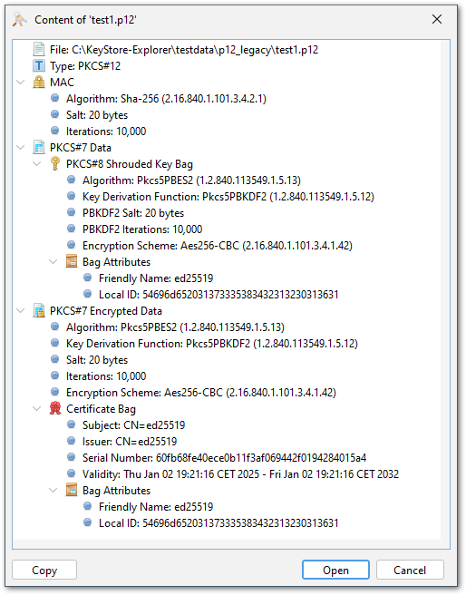
The encryption settings for PKCS#12 files introduced in KSE v5.5.2 have been reworked. The previous implementation in some cases required a restart of KSE to take effect. The new implementation works reliably without a restart. Note that this setting is only used when creating a new PKCS#12 file.
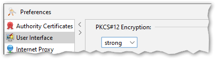
Internally PKCS#12 files consist of "bags" that contain certificates or keys. Each key bag can be encrypted with a different password. This matches the KeyStore API which allows to use different passwords for each entry in a KeyStore. However, the widely established convention is to use the same password for all bags in a PKCS#12 file.
KSE now uses the same password for all entries when a PKCS#12 keystore is created or modified. When a PKCS#12 keystore is opened, KSE will try to use the keystore password for all entries. Only if this fails, KSE will ask for an entry password.
In previous releases KSE used the Java Preferences API to store its configuration. This API is not very flexible and has some limitations. For example, it is difficult to store complex configuration objects. Also, the location of the configuration differs from platform to platform. On Windows it is stored in the registry, on macOS in a plist file and on Linux in a hidden directory in the home folder. This makes it difficult to share the configuration between different platforms or add a portable mode to KSE where the configuration files are stored in the same directory as KSE.
KSE now uses a custom configuration system that stores the configuration always in a file and searches for it in the following locations in this order:
The configuration is stored in a JSON file called "config.json". The configuration file is created automatically after KSE was used for the first time.
The encrypted passwords of the password manager are stored in a separate file called "keystore-passwords.json". This file is stored in the same directory as the main configuration file.
The configuration file also includes now a section for system properties. This allows to set system properties like "sun.java2d.d3d.onscreen", which fixes a rare redraw issue on Windows. There is currently no GUI for this, because it is only needed for very special use cases.
There is no automatic migration of the old configuration to the new one.
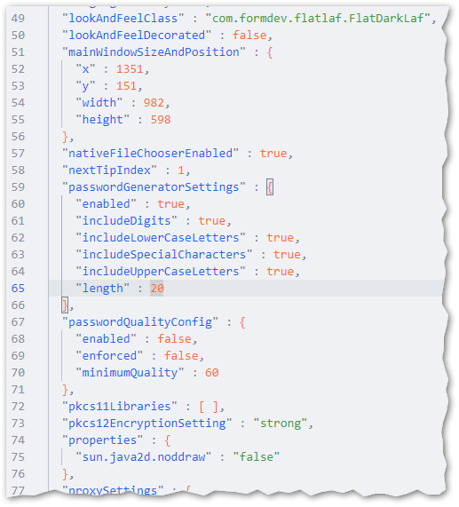
Using the value from AIA extension instead is still possible.
This feature has been contributed by Erik Mattheis.
This feature has been contributed by Jairo Graterón.
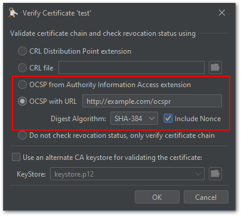
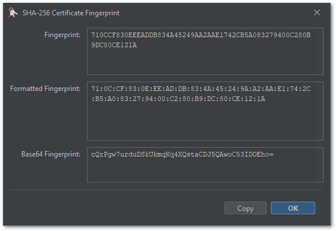
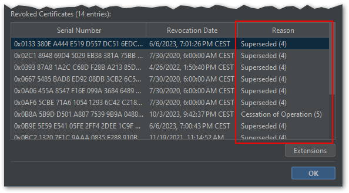
KeyStore Explorer Release 5.5.0, 5.5.1, 5.5.2 and 5.5.3
KeyStore Explorer Release 5.4.0, 5.4.1, 5.4.2, 5.4.3 and 5.4.4
KeyStore Explorer Release 5.3.0, 5.3.1 and 5.3.2
KeyStore Explorer Release 5.2.0, 5.2.1 and 5.2.2